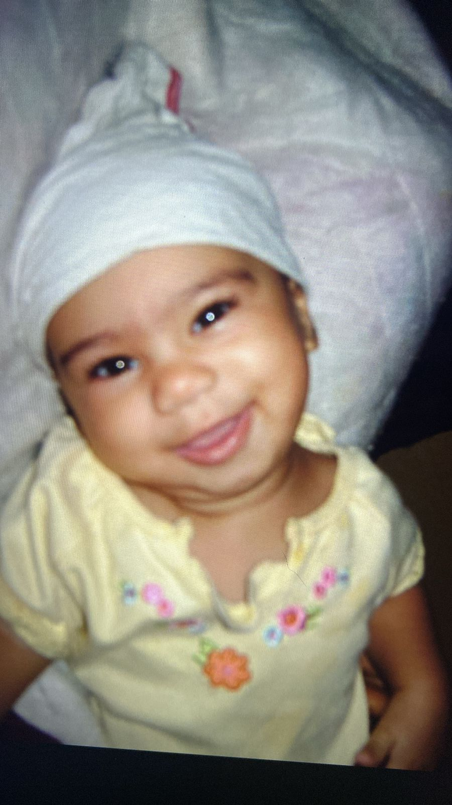
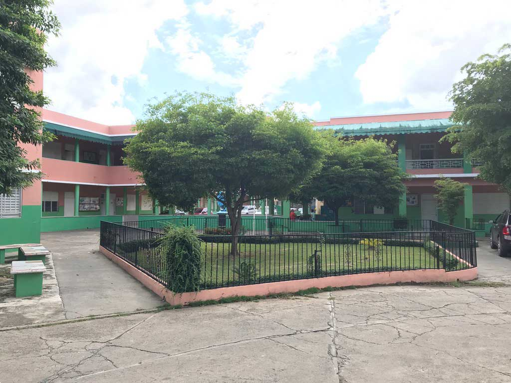

Acerca de mi
Mi foto

Soy Yuleirys Alba, nací el 29 de mayo de 2009 en la República Dominicana. Desde pequeña, el arte
ha sido una gran pasión para mí, especialmente la música y la actuación. El piano es mi mayor
debilidad, lo amo profundamente y me conecta con algo mágico. Además, disfruto mucho de pasar
tiempo con mi familia y ver películas que me transportan a otros mundos.
Además
Me considero una persona extrovertida con quienes me rodean, aunque soy más introvertida con
los que no conozco bien. Me encanta sorprenderme por la vida, ser alegre y activa. Amo cocinar,
sobre todo postres, pero disfruto de preparar cualquier platillo. Ah, y no puedo olvidar que
soy una gran amante del sueño, ¡dormir es uno de mis mayores placeres!
Dónde estudio?
Centro Educativo Marillac

Estudio en el Centro Educativo Marillac desde hace cuatro años, y me siento muy afortunada de formar parte de esta
institución. Es una escuela excelente, con una educación de alta calidad y un enfoque muy sólido en el área técnica.
La formación que recibo en el área técnica me ha permitido desarrollar mis habilidades y conocimientos de manera
increíble. Estoy muy agradecida por la manera en que enseñan y el compromiso que tienen con los estudiantes.
Agradecimientos
Gracias por ver
¡Gracias por pasar por mi página! Me alegra que te hayas detenido a conocer un poco más sobre mí.
Espero que disfrutes lo que encuentres aquí. ¡Nos vemos pronto!